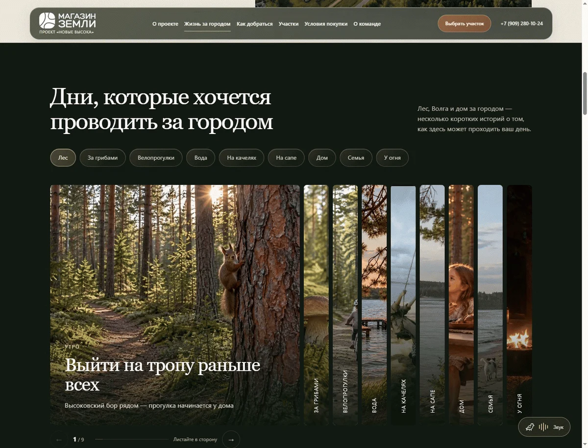
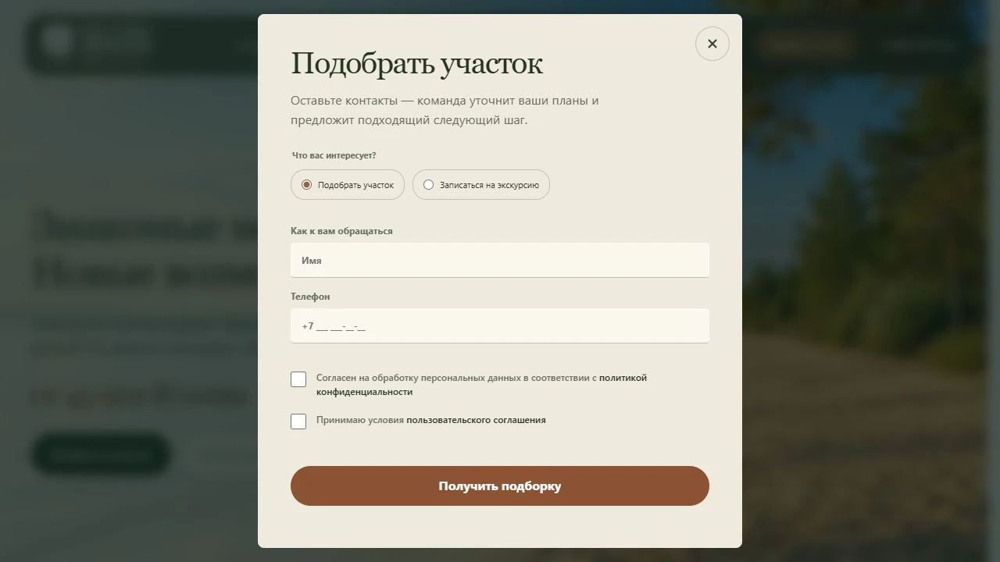
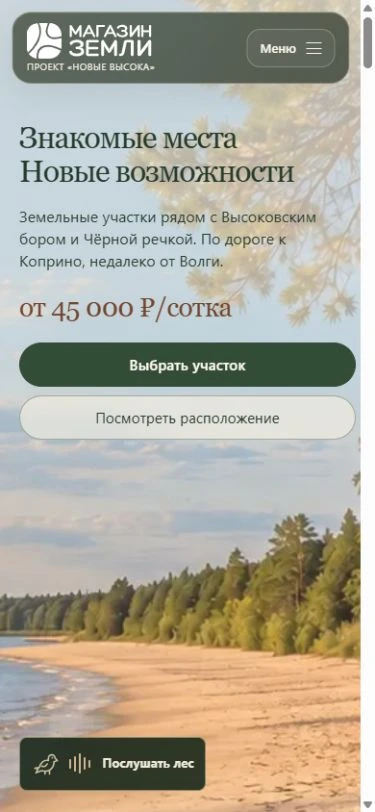
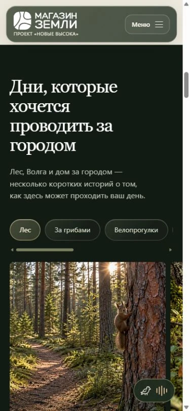
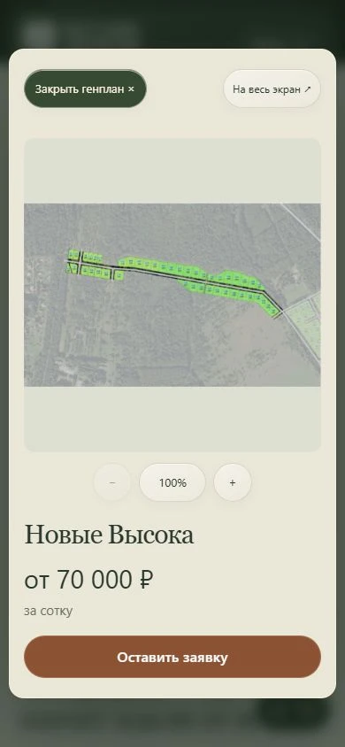

Задача: передать место и помочь сделать первый шаг
«Новые Высока» — земельный проект бренда «Магазин Земли» в Рыбинском районе Ярославской области, рядом с Высоковским бором и Волгой. Ему требовался отдельный лендинг: с собственным характером, понятным рассказом о территории и возможностью обратиться за подбором или записаться на экскурсию.
Нам было важно соединить атмосферу и ясность. Чтобы человек, который здесь ещё не бывал, увидел лесные тропы, почувствовал простор у воды и понял, как это место связано с его планами на дом. А когда появится интерес — смог спокойно разобраться в расположении, кварталах и условиях покупки.
Начали со знакомства с проектом
Работа началась с вводных, вопросов к брифу и обсуждения с клиентом. Мы разбирались, что объединяет территории проекта, кто рассматривает покупку земли и какие вопросы возникают перед поездкой. Среди сценариев были постоянная жизнь за городом, дача и дом для отдыха.
В основу рассказа легло окружение: Высоковский бор, Волга, знакомые местным жителям ориентиры и близость Рыбинска. Так появилась опора для содержания и дизайна — конкретное место, с которым хочется познакомиться ближе.
Выстроили путь от общего к частному
Сначала собрали прототип и проверили последовательность знакомства. Первый экран создаёт впечатление и обозначает предложение. Дальше страница рассказывает о месте, показывает загородные сценарии и реальные видео, помогает разобраться с дорогой. После этого посетитель переходит к кварталам, генпланам и условиям покупки.
Так устроена мягкая продажа на лендинге: у каждого следующего шага есть понятная причина. Фотографии помогают представить день за городом, маршруты — спланировать поездку, генпланы — рассмотреть конкретную территорию. Для тех, кто уже готов к разговору, кнопка выбора участка доступна с первого экрана.
Нашли визуальный образ: воздух, вода и сосны
Мы перебирали визуальные направления и дорабатывали композицию вместе с клиентом. В итоговом первом экране главным стал широкий песчаный берег с соснами и открытым видом на воду. Изображение создали с помощью искусственного интеллекта: оно передаёт желаемое ощущение места — лёгкость, свободу и простор.
Этот образ раскрывает ценность будущей загородной жизни: выйти к воде, пройтись вдоль леса, задержаться на берегу. При этом главный баннер остаётся атмосферной визуализацией. По нему нельзя судить о виде из конкретного участка или его непосредственном выходе к Волге.
Палитру построили на глубоких лесных оттенках, тёплых светлых фонах и медных акцентах. Крупная типографика и свободная композиция поддерживают спокойный ритм. Светлый первый экран сменяется более камерными тёмными разделами — словно прогулка от открытого берега в тень соснового леса.


Превратили просмотр в небольшую прогулку
В блоке «Дни, которые хочется проводить за городом» собрали короткие истории: утро на лесной тропе, грибы, велопрогулка, отдых у воды, семейный вечер на террасе. Каждая сцена даёт свой повод представить себя здесь.
На компьютере фотографии раскрываются плавно: выбранный сюжет занимает больше места, соседние кадры остаются рядом и приглашают продолжить прогулку. Короткие подписи дополняют изображение, оставляя ему главную роль.
Визуальные истории дополнили живыми видео территории, прогулками с основателем проекта и дорогой к участкам. Они дают другое ощущение присутствия: можно увидеть движение камеры, настоящую местность и человека, который знакомит с проектом. Реальные съёмки и атмосферные визуализации выполняют разные задачи и дополняют друг друга.
Добавили ещё одно измерение — звук
На первом экране есть приглашение «Послушать лес». Звук включается по желанию посетителя и сопровождает дальнейшее знакомство с сайтом. Вместе с соснами на экране и спокойным движением фотографий он помогает на мгновение отвлечься от города.
Это небольшая деталь, которая продолжает главную идею проекта. Хочется, чтобы от страницы словно пахло хвоей, свежим воздухом и нагретой солнцем корой. Изображения создают этот образ, а звук делает его объёмнее.
Послушайте, как звучит этот лендинг
Небольшая пауза среди городских дел — включите звуки леса.
Помогли перейти от впечатления к выбору
После знакомства с местом посетитель может выбрать город отправления и способ поездки. Блок маршрутов связывает образ загородной жизни с практическим вопросом: как сюда добраться.
Дальше — общий план и кварталы. Посетитель рассматривает расположение территорий, открывает генплан интересующего квартала и приближает его для изучения. Этот переход продолжает принцип от общего к частному: сначала понять место целиком, затем рассмотреть свою будущую точку на карте.
Условия рассрочки, акционное предложение, рассказ о команде и ответы на вопросы помогают подготовиться к разговору. В обращении можно выбрать подходящий сценарий: подбор участка, экскурсию или дистанционное знакомство через видео. Следующий шаг соответствует тому, к чему человек готов сейчас.


Адаптировали и довели до релиза
Отдельно работали с мобильной версией: композицией первого экрана, кадрированием изображений, навигацией, фотогалереей и просмотром планов. На небольшом экране важно сохранить ощущение простора и дать человеку возможность рассмотреть детали без лишних усилий.






После согласований и последовательных доработок лендинг был выпущен на собственном домене. Итоговая страница соединяет атмосферное знакомство с местом и понятный путь к обращению: почувствовать окружение, узнать подробности, рассмотреть квартал и договориться о следующем шаге.
«Новые Высока» можно начать узнавать ещё до поездки — через свет на берегу, лесные истории, живое видео и звук. А затем приехать и увидеть всё своими глазами.